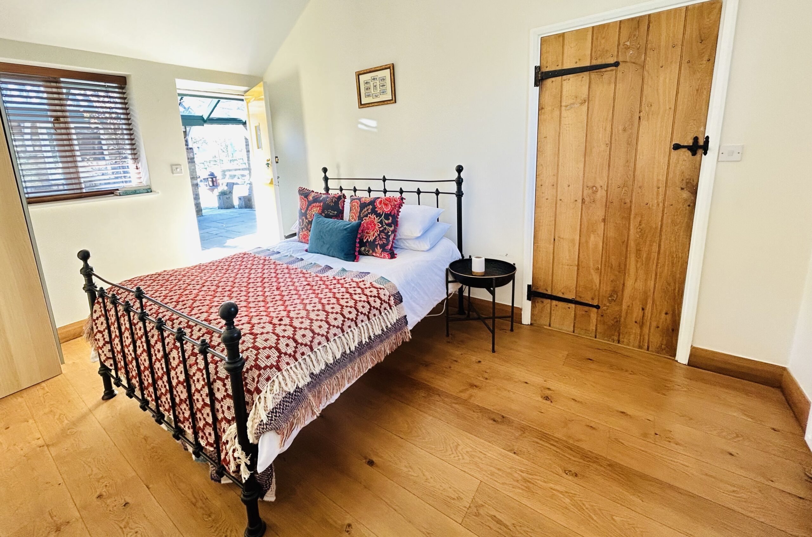

Stow Maries
Prince of Wales

Affectionately known as POW!
Our personal favourite
This family-run country pub has four ensuite double rooms set around a courtyard. Standard rooms have either a shower or bath, while the premium room has a super-king bed, wet room and freestanding bath.
10/10 breakfast
Please note that guests under 16 cannot stay in the accommodation.
- Greenacres
- 10 minutes
- High House
- 14 minutes
6 Woodham Road, Stow Maries, CM3 6SA
01621 828 971
